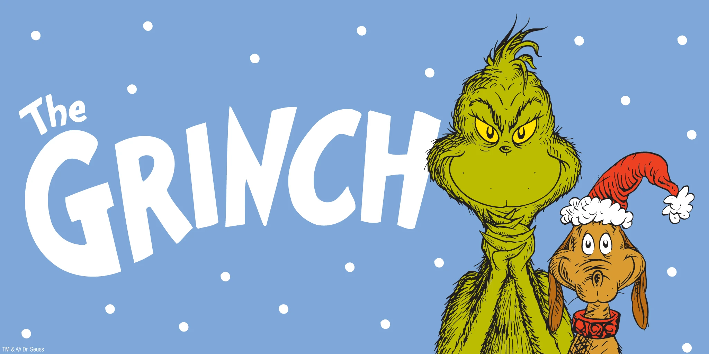
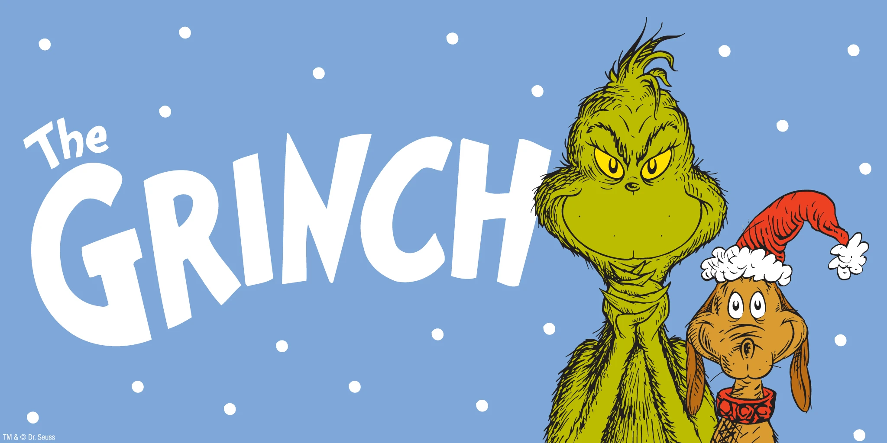

The Grinch is a character created by children's author and cartoonist Dr. Seuss.[1] He is best known as the main character of the 1957 children's book How the Grinch Stole Christmas! He has been portrayed and voiced by many actors, including Boris Karloff, Hans Conried, Bob Holt, Walter Matthau, Anthony Asbury, Jim Carrey, Rik Mayall, Benedict Cumberbatch, Matthew Morrison, David Howard Thornton, and James Austin Johnson.
 
